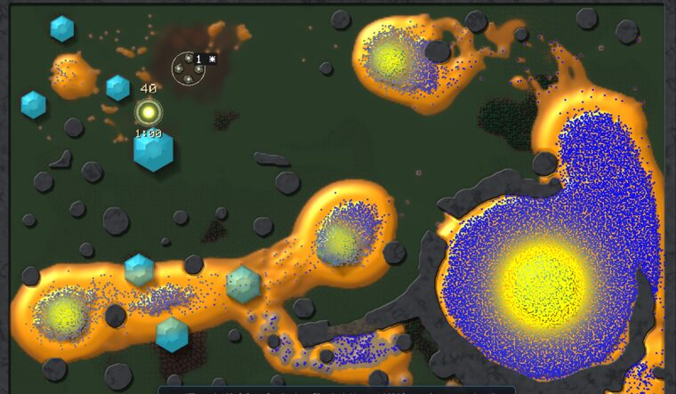
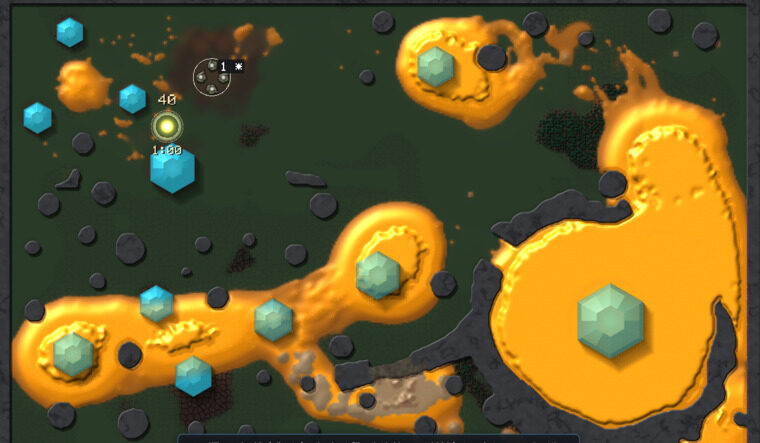
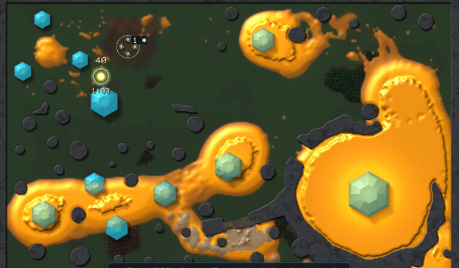

<title>Slime fed glow</title>
<meta name="claude:viewport-fit-sides" content="cover">
<link rel="stylesheet" href="https://fonts.googleapis.com/css2?family=Inter:wght@400;600&family=Space+Grotesk:wght@600&display=swap">
<style>
/* One column of before/after pairs, dark-first like the game's own screens. */
:root{--bg:#101318;--panel:#171b22;--fg:#e6e8ec;--muted:#9aa2ad;--gold:#f0a63f;--line:#2a303a;color-scheme:dark;
--body:Inter,system-ui,sans-serif;--head:"Space Grotesk",Inter,system-ui,sans-serif}
@media (prefers-color-scheme: light){:root:not([data-theme="dark"]){--bg:#f4f5f7;--panel:#fff;--fg:#1b1f26;--muted:#5b6370;--gold:#a8620a;--line:#d9dde3;color-scheme:light}}
:root[data-theme="light"]{--bg:#f4f5f7;--panel:#fff;--fg:#1b1f26;--muted:#5b6370;--gold:#a8620a;--line:#d9dde3;color-scheme:light}
body{background:var(--bg);color:var(--fg);font-family:var(--body);line-height:1.5}
main{max-width:1080px;margin:0 auto;padding-block:28px 48px;padding-left:max(16px,env(safe-area-inset-left,0px));padding-right:max(16px,env(safe-area-inset-right,0px));display:grid;gap:28px}
h1{font-family:var(--head);font-size:1.7rem;margin:0;text-wrap:balance}
h2{font-family:var(--head);font-size:1.2rem;margin:0}
p{margin:0;max-width:70ch}
.lede{color:var(--muted)}
.opt{display:grid;gap:10px;padding:16px;border:1px solid var(--line);border-radius:10px;background:var(--panel)}
.pair{display:grid;grid-template-columns:repeat(auto-fit,minmax(300px,1fr));gap:10px}
figure{margin:0;display:grid;gap:6px;min-width:0}
figcaption{color:var(--muted);font-size:.9rem}
img,video{width:100%;max-width:100%;border-radius:6px;border:1px solid var(--line);display:block;background:#000}
.tag{font-size:.78rem;letter-spacing:.06em;text-transform:uppercase;color:var(--gold);font-weight:600}
</style>
<main>
<header style="display:grid;gap:8px">
<h1>The slime up close: glowing where it is fed</h1>
<p class="lede">Planet 1 (the Drifter), run seed 1, idle squad, one minute in, the game's own renders on the software GPU. Clips are 4 s of play at 4 frames a second. Before is today's main; after is the prototype.</p>
</header>

<section class="opt">
<span class="tag">What the game knows</span>
<h2>Each walker's energy</h2>
<p class="lede">Inside a big body every cell holds a walker, so the walker count is flat. The trail is flat there too, and the food scent is only a thin ring round each crystal. The one thing that varies is how fed each walker is. Energy flows through the body from the crystals it covers. Below, each walker is drawn as a dot from blue (hungry) to yellow (fed): a hill over each crystal that falls to the rim.</p>
<figure><figcaption>Debug view, zoom 3. This is not a look; it shows the data the look reads.</figcaption></figure>
</section>

<section class="opt">
<span class="tag">Zoom 3</span>
<h2>The body lit from its food</h2>
<div class="pair">
<figure><figcaption>Today: the big body is one even orange.</figcaption></figure>
<figure><figcaption>After: brighter, glossier and a little raised round its crystal, duller at the hungry rim.</figcaption></figure>
</div>
</section>

<section class="opt">
<span class="tag">Zoom 6</span>
<h2>Play zoom</h2>
<div class="pair">
<figure><video src="z6-before.mp4" autoplay loop muted playsinline></video><figcaption>Today</figcaption></figure>
<figure><video src="z6-after.mp4" autoplay loop muted playsinline></video><figcaption>After: the fed glow, plus a tighter, crisper sheen</figcaption></figure>
</div>
</section>

<section class="opt">
<span class="tag">Zoom 12</span>
<h2>Close in</h2>
<div class="pair">
<figure><video src="z12-before.mp4" autoplay loop muted playsinline></video><figcaption>Today</figcaption></figure>
<figure><video src="z12-after.mp4" autoplay loop muted playsinline></video><figcaption>After</figcaption></figure>
</div>
</section>

<section class="opt">
<span class="tag">What this does not fix</span>
<p class="lede">The fine crinkle inside the body is the packed walkers' own relief, and it is the same everywhere. Real veins and flowing streams inside the body need the walkers to move through it. Today the body is packed one walker to a cell, so they can't, and the lab's tries at veins stopped there on 11-19. That would be a change to how the slime moves, not to how it is drawn. Cost: the extra pass is within the software GPU's noise (about +0.3 ms on a 46 ms frame).</p>
</section>
</main>
